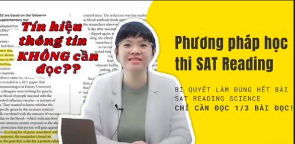

CHIA SẺ VỀ CÁCH ĐỌC READING SCIENCE TỪ GIÁO VIÊN

📌Trong thời gian ôn thi ngoài học từ giáo viên của mình thì mình rất hay lên youtube để tìm các bài giảng. Nhưng mà khi tra có rất nhiều kênh người ta nói rất chung chung và hay dùng những bài reading dễ để giảng, hầu như không có giá trị gì lắm. Hồi đấy thì mình đều tra bằng tiếng anh vì nghĩ sẽ tìm được đa dạng hơn nma hầu hết vid đều như mình vừa nói trên. Thế mà ytb đã gợi ý cho mình một vid giảng về reading của giáo viên người việt (vốn đã hiếm), mình thấy cô giảng rất dễ hiểu nên muốn chia sẻ cho mọi người (vid này nó ra cũng lâu r nên đừng ai nghĩ mình qcao).
📌Tóm tắt thì mọi người cần phải tìm được trong bài khoa học các nhà khoa học đã tìm ra được cái gì mới (nếu không có gì mới thì họ đã không viết bài này) và nó khác với điểm cũ ở chỗ nào, những cái này sẽ là ý chính để các bạn bám vào và tốc độ tìm big picture sẽ được cải thiện (dù sao khi viết bài khoa học người ta luôn báo cáo thứ mới). Vid này cô sử dụng ví dụ từ sat cũ nhưng mà mình vẫn áp dụng được với các đoạn văn ngắn của dSAT và thậm chí còn hiệu quả hơn vì đoạn văn ngắn thường sẽ chỉ có một khám phá mới -> nhanh hơn rất nhiều.
📍CHÚ Ý: Tiêu đề của vid cô ghi là chỉ cần đọc ⅓ bài nhưng mà sau khi mình thử thì vẫn thấy nên đọc hết và chỉ áp dụng cái tìm khám phá mới, dù sao cô cũng là giảng viên đại học còn mình chỉ là học sinh đang học tiếng anh. Đây là link vid cho mọi người:
https://youtu.be/8hvCZRIUbwg